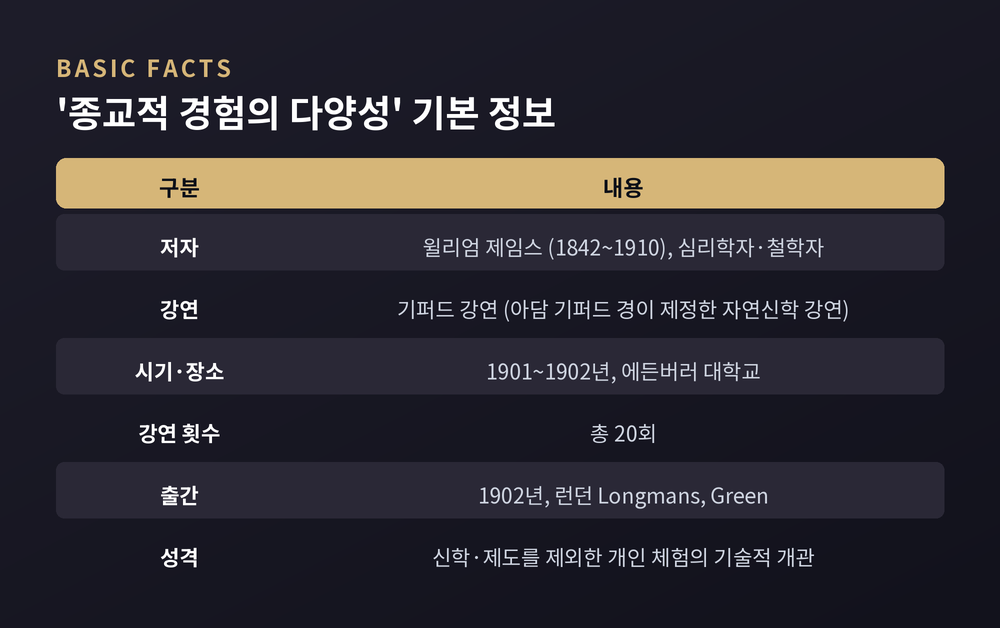
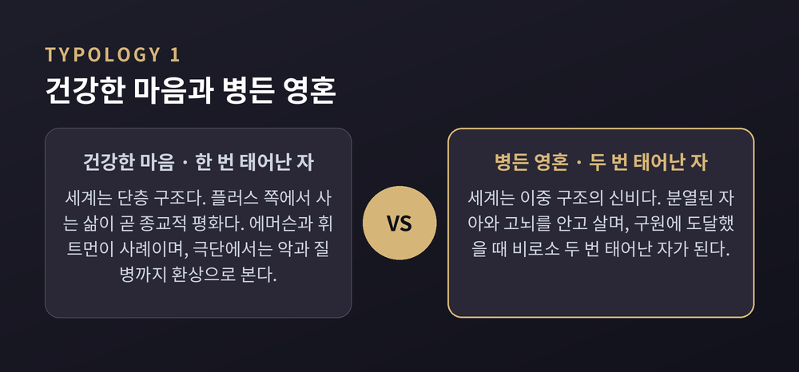
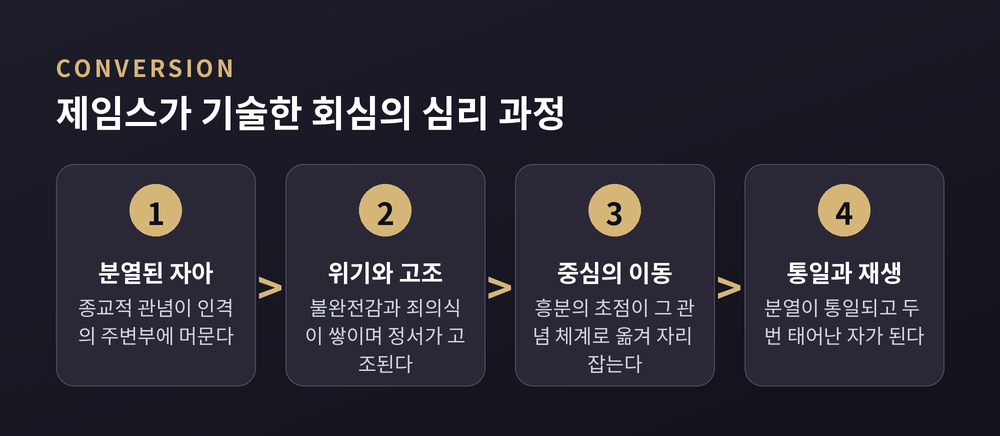
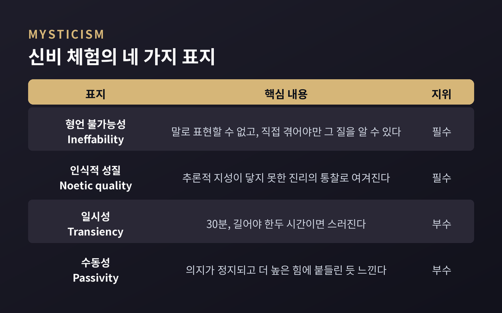
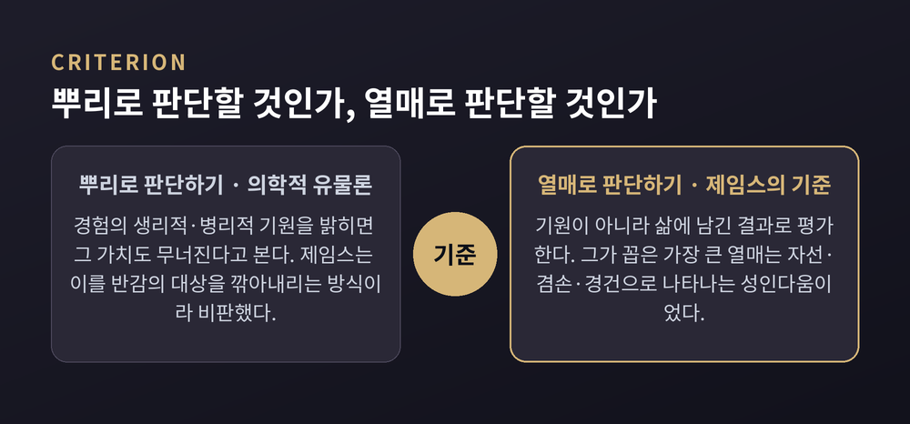
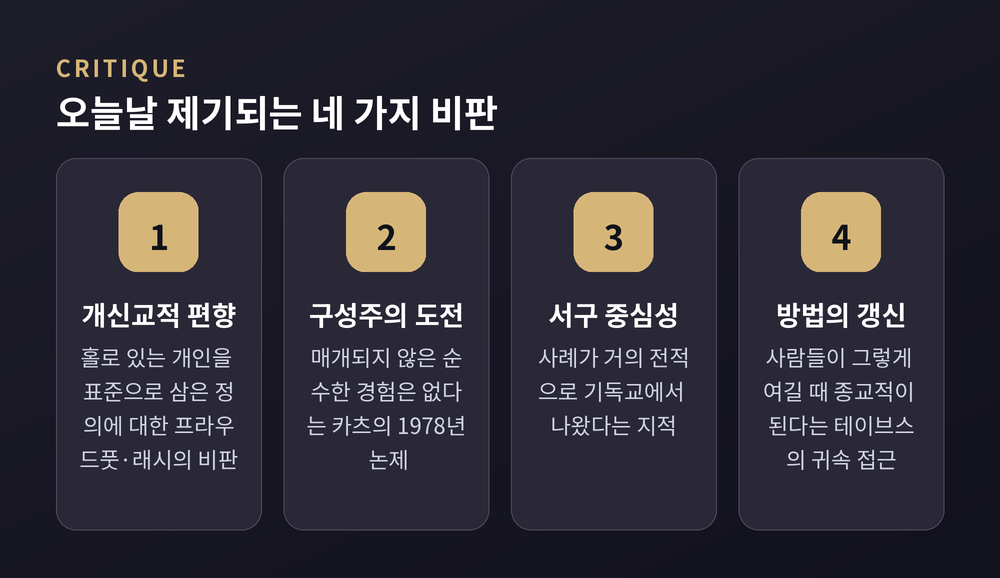

이번 글에서는 윌리엄 제임스의 『종교적 경험의 다양성』을 정리해 보겠습니다. 종교학이 '체험'이라는 다루기 까다로운 대상을 어떻게 학문의 자리에 올렸는지, 그 출발점에 놓인 책입니다. 어느 신앙이 참인가 하는 물음은 다루지 않고, 비교종교와 종교학의 시선으로만 살펴보겠습니다.
먼저 세 줄로 요약하겠습니다.
윌리엄 제임스(1842~1910)는 심리학자이자 철학자입니다. 하버드에서 의학 학위를 받았으나 진료실을 열지 않았고, 1872년부터 1907년까지 하버드에서 해부학과 생리학, 심리학, 철학을 두루 가르쳤습니다. 세계에서 손꼽히게 이른 시기에 실험심리학 실험실을 세운 사람이기도 합니다.
『종교적 경험의 다양성』은 그가 스코틀랜드 에든버러 대학교에서 1901년부터 1902년에 걸쳐 행한 기퍼드 강연 원고입니다. 모두 스무 차례의 강연이었고, 1902년 런던에서 책으로 나왔습니다.
기퍼드 강연은 아담 기퍼드 경이 제정한 '자연신학' 강연입니다. 특정 교단의 교리를 가르치는 자리가 아니라, 일반 청중 앞에서 종교를 학문적으로 다루라는 취지가 처음부터 붙어 있었습니다. 제임스가 선 무대의 성격이 이미 그러했습니다.
시대적 배경도 함께 보아야 합니다. 1890년대 유럽과 미국 대학에는 이른바 '새로운 심리학'이 등장합니다. 철학과 신학에서 자신을 떼어내고, 실험실 기반의 방법을 앞세운 흐름이었습니다. 그 흐름의 한 갈래로 종교심리학이 생겨났고, 연구의 중심지는 미국이었습니다.
제임스가 홀로 착상한 기획이 아니었다는 점도 짚어두겠습니다. 그보다 몇 해 앞서 에드윈 스타벅이 『종교심리학』을 냈고, 제임스가 그 책의 서문을 써 주었습니다. 이후 스타벅은 자신이 모은 방대한 수기 자료를 제임스에게 넘겼습니다. 스타벅의 회고에 따르면 제임스는 그중 수백 건을 훑어보았습니다.
한 가지 사정도 알아둘 만합니다. 제임스는 원래 강연 후반부를 종교에 대한 철학적 평가에 쓸 계획이었습니다. 그러나 건강이 나빠져 그 주제로는 단 한 회의 강연만 쓸 수 있었습니다. 그래서 책은 그가 애초 의도한 것보다 훨씬 기술(記述)에 가까운 저작이 되었습니다.

제임스는 제2강에서 종교를 이렇게 규정합니다. "개인이 홀로 있을 때의 감정, 행위, 경험으로서, 그가 스스로를 신적이라 여기는 무엇과 관계 맺고 있다고 파악하는 한에서의 그것." 『종교적 경험의 다양성』 제2강에 나오는 문장입니다.
짧은 정의지만 결정적인 선택이 담겨 있습니다. 제임스는 이어서, 신학과 철학과 교회 조직은 이런 의미의 종교에서 이차적으로 자라 나온 것이라고 덧붙입니다. 그리고 실제로 신학과 종교 제도를 연구 대상에서 명시적으로 제외했습니다. 직접적이고 즉각적인 종교 경험만을 다루겠다고 못 박은 것입니다.
제도를 무가치하게 본 것은 아닙니다. 교회와 신학은 체험에서 얻은 통찰을 전달하는 매개체로서 중요합니다. 다만 제임스가 보기에 그것들은 창시자의 원초적 경험에 기대어 이차적으로 살아갑니다.
이 선택은 자료의 성격을 바꿉니다. 예전의 종교 연구가 경전과 교리와 제도를 비교하는 작업이었다면, 제임스가 펼쳐놓은 것은 회심 수기와 일기, 편지, 자서전, 설문 응답이었습니다. 익명의 개인이 남긴 1인칭 진술이 처음으로 학문의 1차 자료 자리에 올라선 셈입니다.
얻은 것이 뚜렷한 만큼 잃은 것도 뚜렷합니다. 이 문제는 마지막 장에서 다시 다루겠습니다.
제임스의 첫 번째 유형론은 경험의 대상이 아니라 경험 주체의 기질을 기준으로 삼습니다. 주체의 성향이 경험의 내용 자체를 물들인다고 보았기 때문입니다.
한쪽은 '건강한 마음(healthy-minded)', 곧 '한 번 태어난 자'입니다. 이들에게 세계는 단층 구조입니다. 각 부분은 겉보기 그대로의 가치를 지니고, 플러스와 마이너스를 단순히 더하면 총가치가 나옵니다. 행복과 종교적 평화는 그 계좌의 플러스 쪽에서 사는 일로 이루어집니다. 제임스는 이런 사람을 "영혼이 하늘색을 띤 사람"이라 불렀고, 에머슨과 월트 휘트먼을 사례로 들었습니다. 극단으로 가면 질병과 악조차 환상으로 여기는 '마음 치료' 운동으로 이어집니다.
다른 쪽은 '병든 영혼(sick soul)', 곧 '두 번 태어난 자'입니다. 이들에게 세계는 이중 구조의 신비입니다. 세계의 악을 지워버릴 수 없고, 비관과 고뇌 속에서 '분열된 자아'를 안고 삽니다. 제8강의 제목이 그대로 「분열된 자아, 그리고 그 통일의 과정」입니다. 이 사람은 구원에 도달했을 때 비로소 '두 번 태어난 자'가 됩니다. 반대로 건강한 마음의 사람은 이미 세계와 화해해 있으므로 한 번만 태어나면 충분합니다.
제임스는 이를 가치중립적 구분으로 제시했습니다. 그러나 연구자들의 평가는 다릅니다. 그는 사실상 병든 영혼 쪽을 더 깊은 종교성으로 여겼고, 무엇보다 제6·7강에 등장하는 익명의 극심한 우울 체험 기록은 제임스 자신의 이야기였습니다. 분류자가 분류 대상 안에 들어가 있었던 셈입니다.

제9·10강은 회심(conversion)에 할애됩니다. 제임스는 회심을 신학적 사건이 아니라 인격의 재편으로 기술합니다.
핵심 개념은 '에너지 중심의 이동'입니다. 흥분과 열기의 초점이 어떤 관념 체계 안에 영구히 자리를 잡으면, 특히 그것이 위기를 거쳐 갑작스레 일어나면 우리는 그것을 회심이라 부릅니다. 종교적 관념이 인격의 주변부에 있다가 중심부로 옮겨 앉는 사건이라는 뜻입니다.
여기서도 제임스는 스타벅의 통계를 끌어옵니다. 복음주의 환경에서 자란 청소년이 겪는 통상적 회심은, 모든 계층의 인간에게 나타나는 청소년기의 정상적인 영적 성장과 매우 유사하다는 결과였습니다. 연령대도 대개 열네 살에서 열일곱 살 사이로 겹쳤습니다. 불완전감, 침울과 우울, 병적인 자기성찰, 죄의식, 내세에 대한 불안 같은 증상도 같았습니다.
주목할 점은 제임스가 이 결과를 어떻게 다루었는가입니다. 그는 회심을 초자연적 개입 여부로 판정하지 않았습니다. 동시에 "그러니 회심은 사춘기 현상에 불과하다"는 결론으로도 가지 않았습니다. 이 절제된 태도가 다음 장의 주제로 이어집니다.

제임스는 '신비주의'라는 말이 모호하고 감상적인 견해에 던지는 비난의 말로 자주 쓰인다고 지적합니다. 그래서 논의를 위해 네 가지 표지를 제안합니다. 어떤 상태가 이 표지를 지니면 신비적이라 부르자는, 일종의 조작적 정의입니다.
첫째는 형언 불가능성(ineffability)입니다. 당사자는 즉각 "말로 표현할 수 없다"고 말합니다. 제임스의 표현을 그대로 옮기면, 그 질은 "직접 겪어야만 알 수 있고, 남에게 전달되거나 이전될 수 없다"고 합니다(제16강).
둘째는 인식적 성질(noetic quality)입니다. 감정과 닮았지만 당사자에게는 지식의 상태로 여겨집니다. 추론하는 지성이 닿지 못한 진리의 심층을 꿰뚫는 통찰이며, 대체로 이후의 삶에 대한 묘한 권위감을 남깁니다.
셋째는 일시성(transiency)입니다. 오래 지속되지 못합니다. 드문 경우를 빼면 30분, 길어야 한두 시간이 한계이고 그 뒤에는 일상의 빛 속으로 스러집니다.
넷째는 수동성(passivity)입니다. 주의 집중이나 특정한 신체 수행으로 촉진될 수는 있으나, 일단 그 의식이 시작되면 자신의 의지가 정지된 듯 느끼고 때로는 더 높은 힘에 붙들린 듯 느낍니다.
이 넷의 무게는 같지 않습니다. 제임스는 앞의 둘만 갖추면 신비적이라 부르기에 충분하고, 뒤의 둘은 덜 뚜렷하지만 대개 함께 발견된다고 명시했습니다. 정의의 핵심은 형언 불가능성과 인식적 성질입니다.
한 가지 솔직한 고백도 강연에 들어 있습니다. 제임스는 자신의 기질이 그런 상태를 누리는 데서 거의 완전히 차단되어 있어 "간접적으로만" 말할 수 있다고 청중에게 밝혔습니다. 그러면서도 개인의 종교 경험은 그 뿌리와 중심을 신비적 의식 상태에 두고 있다고 보아, 이 강연을 다른 모든 장이 빛을 얻어 가는 자리로 삼았습니다.
인식론적으로 남긴 단서도 있습니다. 제임스는 신비 체험이 그것을 겪은 당사자에게는 권위 있는 믿음의 근거가 되지만, 전해 들은 사람에게는 근거가 되지 못한다고 보았습니다. 이 비대칭은 오늘날까지 종교철학에서 논의되는 주제입니다.

제임스는 첫 강연 「종교와 신경학」에서 '의학적 유물론(medical materialism)'이라는 말을 만듭니다. 종교 경험을 그 신경학적·생리학적 원인으로 환원해 기각하거나, 반대로 확증하려는 시도를 가리킵니다. 그는 이런 태도를 자기가 반감을 가진 마음 상태를 깎아내리는 방식이라 비판했습니다.
제임스가 겨냥한 표적은 셋이었습니다. 종교를 생리에 뿌리박은 비정상 심리로 환원하는 의학적 유물론, 종교를 지적 작업으로 환원하는 초월적 관념론 계열의 철학, 그리고 의례와 교리를 개인의 체험 앞에 놓는 제도 종교였습니다.
그가 내놓은 대안적 기준은 간명합니다. 뿌리가 아니라 열매로 판단하라는 것입니다. 기원이 병리적이라는 사실만으로 그 경험의 가치가 무효화되지는 않는다는 뜻입니다. 이는 관념이 '작동하면' 참이라고 보는 그의 실용주의와 곧바로 이어집니다. 종교는 자의적으로 특권을 누려서도, 그렇다고 손쉽게 기각되어서도 안 되고, 어떤 가치 있는 목적에 얼마나 유용한지로 평가되어야 합니다.
제임스가 찾은 가장 큰 열매는 '성인다움(saintliness)'이었습니다. 자선과 겸손, 경건과 행복으로 나타나며 모든 종교에 존재한다고 그는 보았습니다.
병리적 기원을 부인한 것도 아닙니다. 그는 종교 경험이 뇌의 병리에 뿌리를 둘 수 있고 비합리적일 수 있음을 인정했습니다. 다만 열병이나 취기 상태에서 얻은 관념과 달리, 종교 경험 이후의 통찰은 당사자에게 계속 말이 되고 평생 소중히 간직되는 경우가 많다는 점을 근거로 삼았습니다.
한계를 스스로 인정한 대목도 있습니다. 마지막 강연에서 그는 종교가 전체적으로 인류에게 유익하다고 결론지으면서도, 그것이 종교의 진리성을 확립하지는 못한다고 못 박았습니다. 신 존재를 증명하려는 고전적 논증들에 대해서도 "그것들은 아무것도 엄밀히 증명하지 못하며 우리의 기존 편향을 보강할 뿐"이라고 적었습니다. 자신이 지닌 믿음 역시 증명할 생각이 없는 '과잉신념'이라고 이름 붙였습니다.

제임스는 오늘날 종교심리학의 창립자로 여겨집니다. 이 분야에서 가장 많이 인용되는 인물이기도 합니다. 그러나 가장 큰 공헌은 특정 이론이 아니라, 종교의 '체험적 차원'을 연구해도 된다는 자리를 만들어 준 일이라는 평가가 일반적입니다. 특히 신비 체험의 네 가지 표지 덕분에, 후대 학자들은 난해하거나 극단적인 것을 다룬다는 이유로 무시당할 걱정을 크게 덜었습니다.
당대의 평가는 처음부터 양쪽이었습니다. 찰스 퍼스는 이 책의 미덕을 "사람들의 마음속으로의 침투"라고 했고, 조지 산타야나는 약점을 "진리 관념을 해체하고 이유 없는 믿음을 권하며 미신을 조장하는 경향"이라고 되받았습니다. 백 년이 지난 지금도 논점은 크게 다르지 않습니다.
오늘날 제기되는 비판은 대체로 네 갈래입니다.
첫째, 개신교적·개인주의적 편향입니다. 웨인 프라우드풋은 종교를 "홀로 있는 개인들의 경험"으로 규정한 제임스의 정의가 거의 희극적일 만큼 개신교적인 편향을 드러낸다고 평했습니다. 신앙이 사적 영역으로 옮겨간 것 자체가 특정한 역사적 현상이라는 지적입니다. 니콜라스 래시는 여기에 더해, 바울이나 예수 같은 인물도 고립 속에서가 아니라 사회적·역사적 맥락 안에서 종교 경험을 했다고 반박했습니다.
둘째, 구성주의의 도전입니다. 스티븐 카츠는 1978년 논문에서 "순수한, 즉 매개되지 않은 경험은 없다"고 선언했습니다. 기독교 신비가의 합일 체험과 불교도의 공(空) 체험은 같은 실재에 대한 두 만남이 아니라, 서로 다른 개념 틀이 빚어낸 다른 두 경험이라는 것입니다. 이는 형언 불가능성을 필수 표지로 놓은 제임스의 틀을 흔듭니다. 다만 '순수의식 사건'이 가능하다는 반론도 있어, 이 논쟁은 아직 결론이 나지 않았습니다.
셋째, 서구 중심성과 사례 편중입니다. 제임스는 자신의 착상을 한 종교에 가두려 하지 않았지만, 그가 든 사례는 거의 전적으로 기독교에서 나왔습니다.
넷째, 방법론의 갱신 요구입니다. 앤 테이브스는 2009년 저작에서 초점을 '고정된 사물로서의 종교적 경험'에서 '사람들이 자기 경험에 의미를 부여하는 과정'으로 옮기자고 제안했습니다. 경험은 그 자체로 종교적인 것이 아니라, 사람들이 그렇게 여길 때 종교적이 된다는 관점입니다.
덧붙이면 실용주의 내부에서도 이견이 있습니다. 리처드 로티는 제임스가 '성인다움' 강연에서 그 덕의 가치를 결국 기원에 의존시켜, 자신의 실용주의 원칙에서 이탈했다고 지적했습니다.

정리하면 이렇습니다. 제임스는 종교를 옹호하지도 기각하지도 않은 채, 종교를 관찰 가능한 인간 경험으로 옮겨 놓았습니다. 그 자리에서 유형론이 생기고 표지가 생기고 논쟁이 생겼습니다. 오늘날의 비판들도 실은 그가 열어 둔 문으로 들어와 그 문틀을 다시 재는 작업에 가깝습니다.
"체험을 학문의 대상으로 삼는 순간, 학문은 그 체험을 다 담을 수 없다는 사실도 함께 받아들여야 한다."
제임스는 자신이 신비 상태를 누리지 못해 간접적으로만 말할 수 있다고 청중 앞에서 인정했습니다. 그 정직한 한 문장이 이 책을 백 년 넘게 살아남게 한 힘이 아닐까 생각합니다.